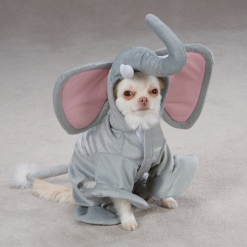
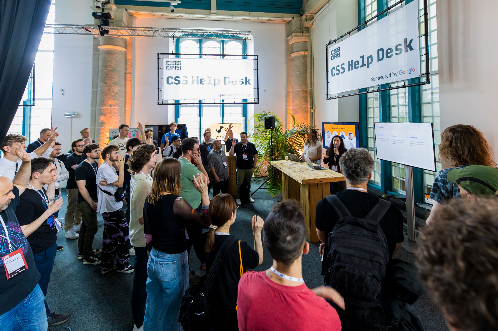
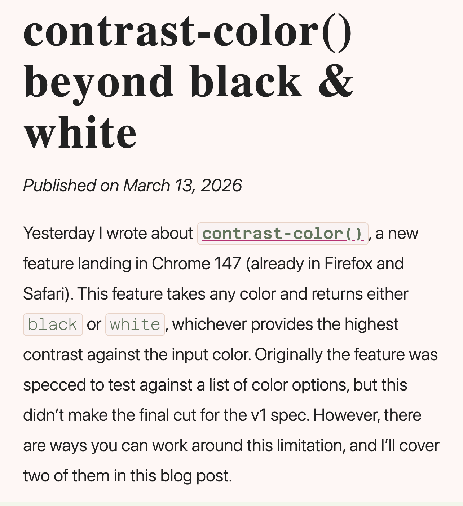
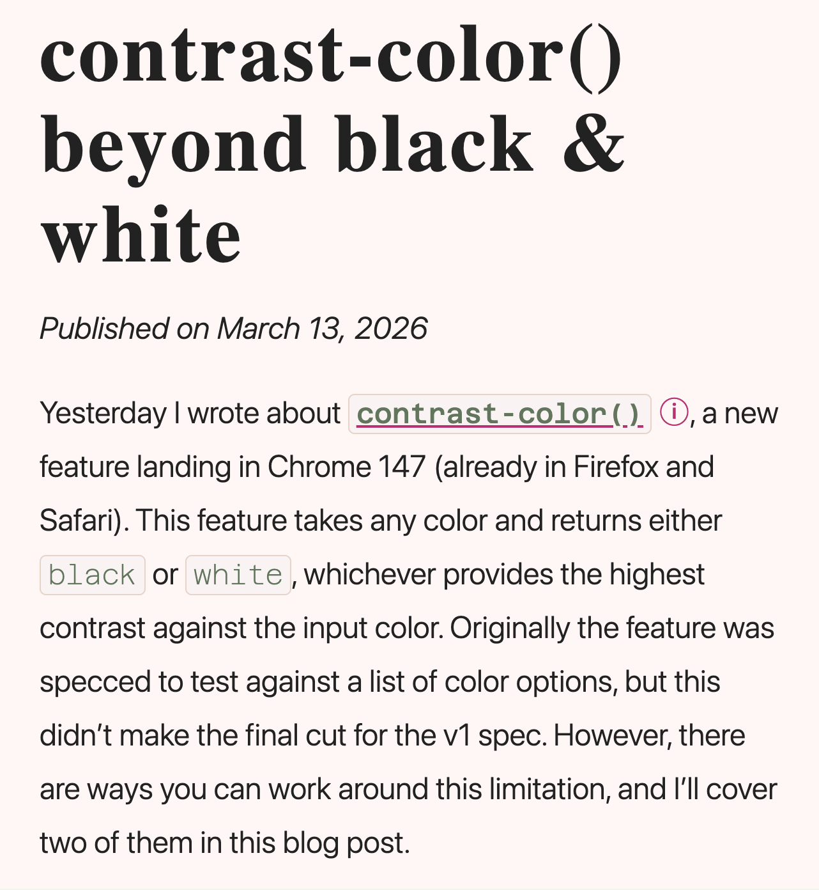
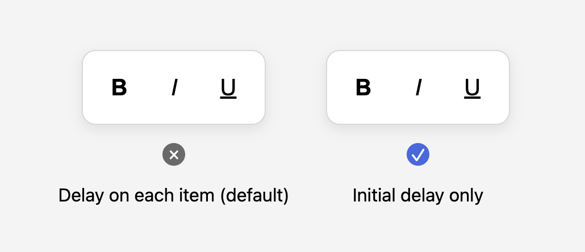
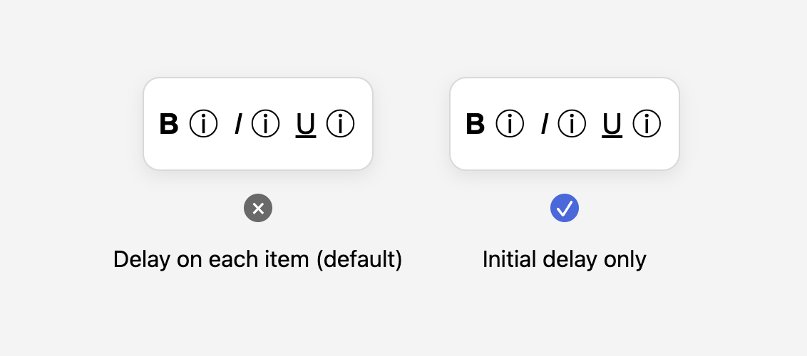
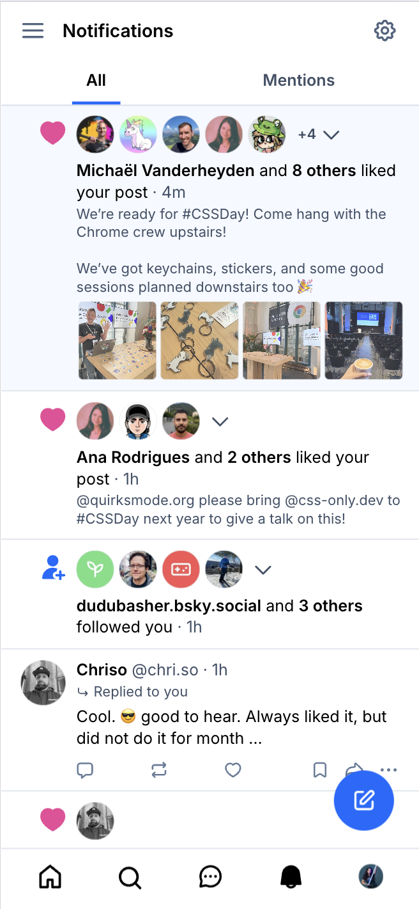
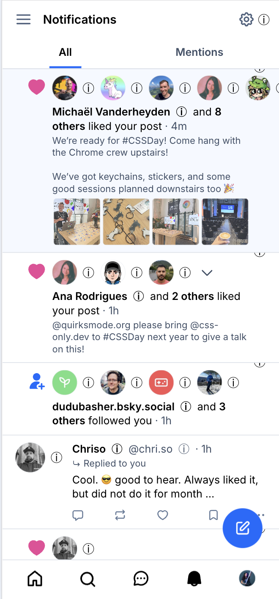

AI
How to build
@alxui_ux
- @alxui_ux
- @azhassan_
- @opawica
- Emil Kowalski
- @yui540
- Tubik Studio
- AntonSKV
- @Studiyoco
- @AdityaSur11
- Aurelien_Gz
- userinterface.wiki
- Nitish Khagwal
Key UX Principles
- Respect user preferences
- Maximize content, reduce noise
- Implement natural interactions
- Provide guided navigation
- Adapt to the form factor
Appy experiences
1. Respect user preferences
Respect user preferences (theming, motion, etc.)
Think about the user's context
Users co-design the experience with you
prefers-color-scheme:
light or dark themeprefers-contrast:
higher contrast between adjacent colorsprefers-reduced-motion:
minimized animation or motionprefers-reduced-transparency:
solid layers over translucent effects
prefers-color-scheme
light-dark()
 Luckily I work with some smart people who found a way around
Luckily I work with some smart people who found a way around this without
color-scheme()
CSS custom functions (@function)
@function --light-dark(--light, --dark) {
result: if(
style(--scheme: dark): var(--dark); else: var(--light)
);
}
:root {
--scheme: light;
@media (prefers-color-scheme: dark) {
--scheme: dark;
}
}
.title {
font-weight: --light-dark(700, 400); /* usage */
}@function
contrast-color()
Recently landed in all stable browsers 🥳
.button {
background: var(--button-bg);
color: contrast-color(var(--button-bg));
}@property --contrast-color {
syntax: "";
initial-value: white;
inherits: true;
}
.card {
.sq-card {
--bg: var(--sq-demo-color);
--contrast-color: contrast-color(var(--bg));
}
.card-label {
color: if(
style(--contrast-color: white): lemonchiffon;
else: indigo
);
} box-shadow:
/* Subtle shadow--visible in light, transparent in dark */
0 1px 2px light-dark(lightgray, transparent),
0 4px 12px light-dark(lightgray, transparent),
0 12px 32px light-dark(lightgray, transparent),
/* Glowy border--transparent in light, visible in dark */
inset 0 0 0 1px light-dark(transparent, oklch(from var(--bg) calc(l + 0.5) c h / 0.5)),
0 0 16px light-dark(transparent, oklch(from var(--bg) calc(l + 0.5) c h / 0.3)),
0 0 3px light-dark(transparent, oklch(from var(--bg) calc(l + 0.5) c h / 0.5));
🎉 WELCOME TO THE WEBSITE 🎉
Subscribe to our newsletter for exclusive deals you'll probably ignore!
*By clicking anything, you agree to receive 47 emails per day
2. Reduce noise
Avoid pop-ups/banners that obscure the screen.
Eliminate visual clutter and application borders.
Keep the interface clean and focused.

@azhassan_
<a href="#" class="nav-item">
<svg>...</svg>
<span>Profile</span>
<div class="dot" aria-hidden="true"></div>
</a>.nav-item {
/* styles */
@container scroll-state(scrolled: bottom) {
width: var(--smaller-dot-width);
svg { scale: 0; opacity: 0; ... }
.dot { scale: 1; opacity: 1; }
}
}Scroll-driven animation
#Interop2026
.info, h2, header, #button-edit, .bg {
animation-timeline: scroll();
animation-range: 0 150px;
}
.info {
animation: adjust-info linear both;
}
.info h2 {
animation: shrink-name linear both;
}
header {
animation: add-shadow linear both;
}
...Just landed in Chrome 146:
Scroll-triggered animation
<button popovertarget="my-tooltip">
<p aria-hidden="true">?</p>
<p class="sr-only">Open Tooltip</p>
</button>
<div id="my-tooltip" class="tooltip" popover>
<p>I am a tooltip with more information.<p>
</div>
#my-tooltip {
inset: auto;
position-area: top;
position-try: flip-block;
}
button {
anchor-name: --invoker;
}
.tooltip {
container-type: anchored;
/* arrow */
&::before {
content: '';
border: solid transparent;
border-top-color: var(--tooltip-bg);
position-anchor: --invoker;
position-area: top;
...
@container anchored(fallback: flip-block) {
position-area: bottom;
border-top-color: transparent;
border-bottom-color: var(--tooltip-bg);
}
}
}
Just landed in Chrome 147: border-shape
.content {
animation: animate-up 0.1s ease-in forwards;
transform-origin: bottom;
border-shape: var(--arrow-at-bottom);
/* … */
}
@container anchored(fallback: flip-block) {
.content {
animation-name: animate-down;
transform-origin: top;
border-shape: var(--arrow-at-top);
}
} <!-- Interest invoker -->
<button interestfor="my-tooltip">
<p aria-hidden="true">?</p>
<p class="sr-only">Open Tooltip</p>
</button>
<!-- Popover -->
<div id="my-tooltip" class="tooltip" popover>
<p>Lavender and fuchsia danced...</p>
</div>
Interest Invokers
<p>Yesterday I wrote about
<a href="/contrast-color"
interestfor="--color-contrast">
<code>contrast-color()</code>
</a>, a new feature landing in Chrome 147...
</p>
<div class="link-preview" popover="hint"
id="--color-contrast">
<img src="..." alt="">
<div class="meta">
<h2>Automated accessible text with...</h2>
<p class="date">Mar 12, 2026</p>
</div>
</div>
[interestfor] {
interest-delay-start: 0.3s;
}
.parent:has(:interest-source) [interestfor] {
interest-delay-start: 0s;
}
Protip from Emil Kowalski —>
Multifunctional popovers with popover=hint
<div class="action-bar">
<button
popovertarget="notifications"
interestfor="tooltip--notifications">
notifications
</button>
</div>
<!-- Notifications -->
<div id="notifications" popover>...</div>
<!-- Tooltip -->
<div id="tooltip--notifications" popover="hint">
Notifications
</div>

::interest-button


::interest-button


::interest-button {
content: "ⓘ" / "";
display: if(media(hover: hover): none;else: inline-block);
color: inherit;
background-color: transparent;
box-sizing: border-box;
min-inline-size: 24px;
min-block-size: max(24px, 1lh);
margin-inline-start: 0.25em;
align-content: center;
text-align: center;
user-select: none;
cursor: help;
margin-block: min(-24px, -1lh);
}


3. Implement natural interactions
4. Provide guided navigation
Morphing animations between states (& stateful feedback)
Transitions between page views
Intentional animations to guide user attention
Interactions that respond to user action
Tubik Studio
dribbble.com/AntonSKV
Some animation tips
- You always want some visual feedback, but don't overdo it
- Animate from the source (ie. invoker)
- Use natural easings (you can approx. physics with
linear()) - Interaction triggers user attention
- Animate between states for better perceived performance
- Think about natural motion
Animate from the source
.tooltip {
transition:
opacity 0.1s ease, transform 0.4s var(--spring),
width 0.4s ease, display 0.4s allow-discrete,
overlay 0.4s allow-discrete;
&:popover-open {
/* open state */
@starting-style {
/* initial styles */
}
}
}
.invoker {
/* styles */
&::before {
/* ... background bubble ... */
transition: transform 0.6s var(--spring);
}
&:interest-source::before {
transform: translateY(-80%) scale(0.65);
}
}
button:active {
scale: 0.95;
}
@keyframes lil-blur-and-move {
0% { ...; filter: blur(0px); }
50% { ...; filter: blur(8px); }
100% { ...; filter: blur(0px); }
}
@Studiyoco
sibling-index()
dialog[open] > * {
animation: entry-animation 0.6s
var(--subtle-spring) forwards;
/* 0.2s delay, then stagger w/sibling-index() */
animation-delay:
calc(sibling-index() * 0.05s + 0.2s);
}Scroll-driven animations
@keyframes appear {
from {
opacity: 0;
transform: translate(0px, 50px);
}
to {
opacity: 1;
transform: translate(0px, 0px);
}
}
li {
animation: appear linear both;
animation-timeline: view();
animation-range: entry 0 cover 25%;
}
Direction-aware scroll-triggered animations
html { container-type: scroll-state; }
@keyframes slide-in {
from { opacity: 0; transform: translateY(var(--amt)); }
to { opacity: 1; transform: translateY(0); }
}
.card {
animation: slide-in 0.6s ease-out forwards;
--amt: 50px;
trigger-scope: --reveal;
timeline-trigger: --reveal view() entry 0% exit 100%;
animation-trigger: --reveal play-forwards;
}
@container scroll-state(scrolled: top) {
.card {
--amt: -50px;
}
}Bring your own scroll markers
scroll-target-group: auto
<ul class="parent">
<li><a href="#intro">Introduction</a></li>
<li><a href="#one">Section one</a></li>
</ul>
<div id="intro">Introduction</div>
<div id="one">Section one</div>
.parent {
scroll-target-group: auto;
}
a:target-current {
/* styles for active TOC link */
}
.pointer-hand {
position-anchor: --active-target;
}
Anchor positioning
(though technically it's in every browser)
.follower {
/* anchor the follower element */
position: fixed;
position-anchor: --hovered;
}
.possible-anchor:hover {
/* update the active anchor */
anchor-name: --hovered;
}
Multi-anchors!
1. Dynamic re-targetting for "bubble"
2. Ephemeral tooltips using:
position-area
position-try-fallbacks
popover=hint
[interestfor]
(Touch of JS to preserve active state since we're
re-anchoring with :hover)
Morphing animations
Scoped view transitions are now in Chrome 147+
$el.startViewTransition()
/* Show only one of two */
#feedback-form, .open #feedback-btn {
display: none;
}
/* Give both the same v-t-name, because */
/* we want to morph the one into the other */
#feedback-form, #feedback-btn {
view-transition-name: --feedback;
}
/* Capture the parent as a separate layer, */
/* so it animates too */
#parent {
view-transition-name: --feedback-parent;
}
...button span {
view-transition-name: --icon;
}
::view-transition-old(--icon) {
animation-name: fade-out;
}
::view-transition-new(--icon) {
animation-name: fade-in;
animation-delay: 0.15s;
}
::view-transition-old(--icon),
::view-transition-new(--icon) {
animation-duration: 0.3s;
animation-timing-function: ease;
}:root { --d: 1; } /* 1 = up, -1 = down, toggled in JS */
::view-transition-old(f) {
animation: .15s both slide-out;
}
::view-transition-new(f) {
animation: .15s both slide-in;
}
@keyframes slide-out {
to {
opacity: 0;
transform: translateY(calc(var(--d) * -10px));
}
}
@keyframes slide-in {
from {
opacity: 0;
transform: translateY(calc(var(--d) * 10px));
}
}
5. Adapt to the form factor
Leverage touch-based intuitive interactions
Consider minimum touch target sizes
Adapt the layout and UI pattern
.page {
display: flex;
scroll-snap-type: x mandatory;
scroll-behavior: smooth;
/* visually hide scrollbar */
scrollbar-width: none;
}// Setup: Scroll to content & inert menu
content.scrollIntoView({
behavior: "instant"
});
menu.setAttribute('inert', '');Future: Overscroll Areas
<div id="container" overscrollcontainer>
<ul id="menu">
<li><a href="/home">Home</a></li>
<li><a href="/settings">Settings</a></li>
</ul>
Some content.
</div>
<button
commandfor="menu"
command="toggle-overscroll"
id=btn>
Toggle Menu
</button>Key UX Principles
- Respect user preferences
- Maximize content, reduce noise
- Implement natural interactions
- Provide guided navigation
- Adapt to the form factor
User experience is more important than ever.
The web is more capable than ever.
Raise your expectations for the web.
Think about the little big things that bring it all to life.
Thank you!
Stay in the know 👀
Demos: codepen.io/collection/myqqRY
Personal
- Blusesky: una.im
- Twitter: @una
- Website: una.im (RSS)
Chrome DevRel
- New: developer.chrome.com
- Stable features: web.dev